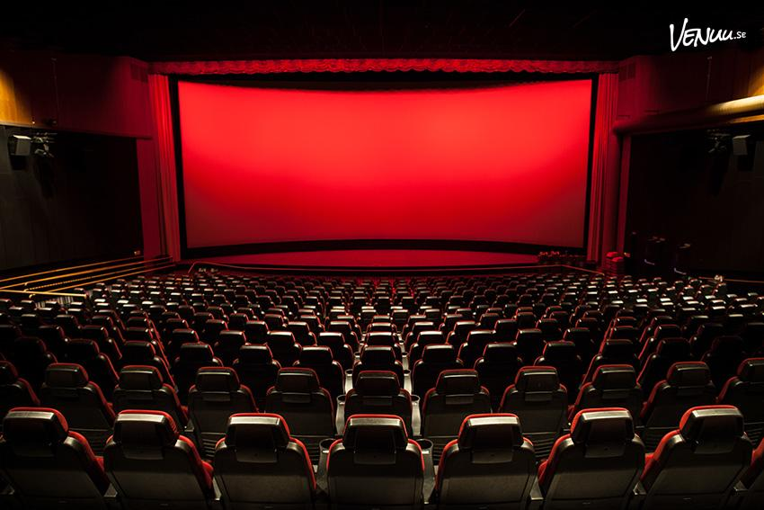
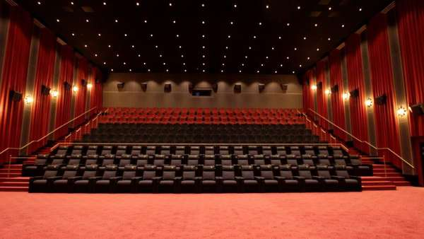

Kort om våra salonger
När biografen invigdes fanns en salong med 350 platser, med vad man kan förmoda ganska begränsad sittkomfort. Detta ändrades efterhand och vid början av 2000-talet hade den siffran gått ned till 150 mycket skönare fåtöljer. Nu har den klassiska salongen 141 fantastiska fåtöljer på samma yta. Det ger fantastiskt benutrymme och den vackert svepande kurvan i golvet ger utmärkt sikt. Efterhand har tekniken för att visa film förfinats och när den digitala tekniken blev mogen var Centrumbiografen en av de första att installera digital projektor. Samtidigt installerades nytt ljud. Den klassiska salongen är nu döpt till ATMOS-salongen och är i teknikens absoluta framkant. Med Dolby ATMOS unika ljudsystem och den bästa projektionstekniken skapas den optimala filmupplevelsen. Salongen är väl anpassad för konferens och presentationer. Våren 2017 invigdes den första nya salongen i Luleå på 80 år. Samtidigt lades all ventilation om för att ge ännu bättre innemiljö i biografen.
Salong A
Salong A är vår stora salong med en 500tum stor filmduk och 141st platser. Barco Laser 4K-projektor. Ljud Dolby Atmos. Moderna biofåtöljer, där man på de fyra första raderna i salongen kan luta ryggstödet bakåt för att få en perfekt vinkel mot filmduken. Rad 8 har Lyxfåtöljer, där man själv väljer inställningar på stolen. Hörslinga finns, den täcker platserna 86-143.
Salong B
Salong B är vår nyaste salong och invigdes i april 2017. Den har en svängd filmduk som ger ett större djup i bilden. Barco 4K-projektor, som har en upplösning på 4096 x 2160 pixlar med inbyggd 3D-Dolby för 3D-filmer. Salongen är byggd för att ta besökarnas komfort till en ännu högre nivå. Salongen har 100st platser. Salongen erbjuder samma generösa utrymme och radavstånd som Salong A och alla fåtöljer har ställbara ryggstöd. Rad 1 har Biosängar, där man ligger ner och ser på film. Salongen är uppbyggd med gradin, dvs trappstegsformat som ger fantastisk sikt framåt. Salongen är även väl anpassad för konferens och presentationer.